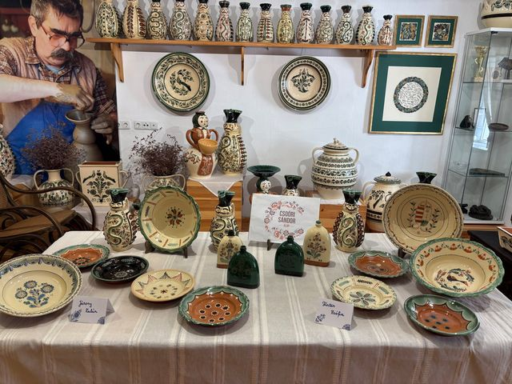
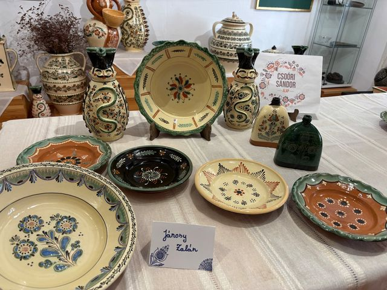
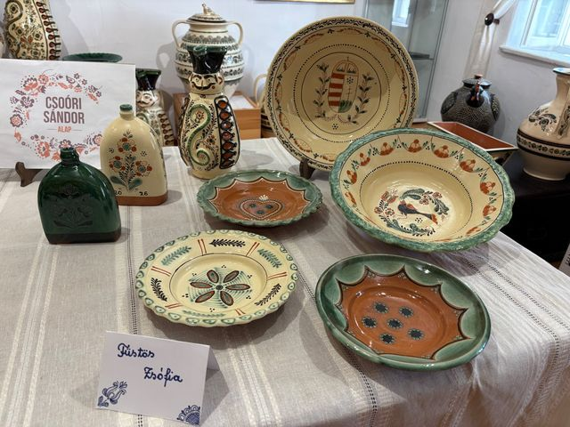

A Jász-Nagykun-Szolnok Megyei Népművészeti Egyesület sikeres pályázatainak köszönhetően a fazekasműhely idén is tudott tanítványokat fogadni. Januárban a Mester és Inas program keretében két fiatal fazekas érkezett a műhelybe, hogy megismerkedjenek a tiszafüredi fazekasság sajátos jegyeivel, és továbbfejlesszék meglévő ismereteiket, mivel tanulmányaikat a Nádudvari Népi Kézműves Szakgimnáziumban folytatták.
Füstös Zsófia mestere Szűcs Andrea, fazekas népi iparművész volt – aki a Népművészet Ifjú Mestere, emellett népi játék és kismesterség oktató. Zsófia korongozott tányérjait, butelláit és Miska kancsóit hagyományos füredi motívumokkal díszítette, karcolás és írókázás technikájával. Kiemelkedő munkája volt a Miska kancsó, amelyet különösen aprólékosan, igényes plasztikus rátétekkel, valamint díszítőkarcolással és írókázással készített el.
Jánosy Zalán Aszódról érkezett a tiszafüredi műhelybe, hogy tovább bővítse gyakorlati tudását. Szűcs Imre fazekas népi iparművész, a Népművészet Mestere irányításával a hangsúly a csipkés szélű, hüvelykezett tányérok és egyedi tálformák korongozásán és díszítésén volt. Munkái során készített butellái és Miska kancsói jól tükrözték a tiszafüredi fazekasság karakteres stílusát: harmonikus motívumvilággal és igényes kivitelezéssel készültek.
Tanítványaink lelkesedéssel, nyitottsággal és kitartással alkottak. Figyelmesen követték mestereik útmutatásait, szorgalmuk példaértékű, a fazekas hagyományok iránt pedig valódi érdeklődést mutatnak. Elkészült alkotásaikból 2026 májusában a Fazekas Gyűjteményes Házban kiállítást tartottunk. Az együtt töltött napok eredményeként számos értékes alkotás született, melyek közül néhány az alábbi fotókon is megtekinthető.
A programot a Csoóri Sándor Alap támogatta.
#csoorisandoralap





